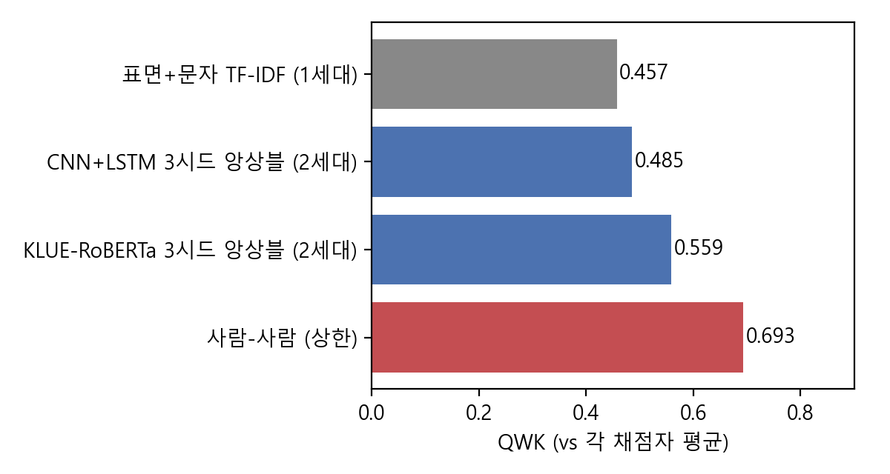
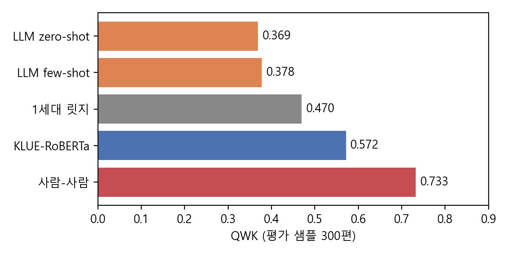
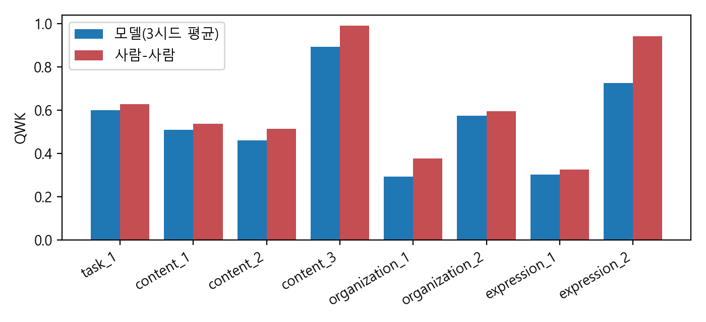
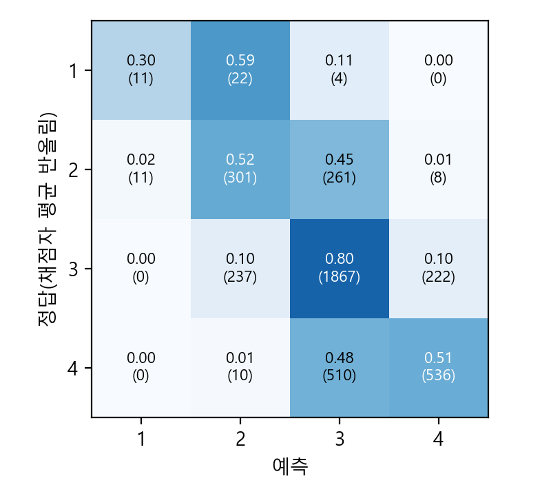

Term Project #1 · 김세훈 · 학번 1102543003 · 코드: https://github.com/k01020989512-beep/aes-korean-essay
AI Hub 서술형 글쓰기 평가 데이터(초5~중3, 36,006편, 종합 점수 1~4)에서 자동 채점 세 세대를 같은 지표(QWK)로 비교했다. 1세대(표면 특징·문자 TF-IDF 릿지)는 0.457, 2세대의 CNN+LSTM은 0.461±0.004, 사전학습 모델 KLUE-RoBERTa는 3시드 평균 0.551±0.007(앙상블 0.559, dev에서 정한 점수 구간 보정 후 0.579)이었고 사람 채점자 간 QWK는 0.693이다. 3세대로 Claude에 루브릭을 주고 평가 세트 300편을 채점시킨 결과(zero-shot 0.369, few-shot 0.378)는 같은 샘플의 KLUE-RoBERTa(0.572)보다 낮았고 신뢰구간이 겹치지 않았다. LLM은 정답보다 1·2점을 크게 많이 주는 가혹한 쪽으로 치우쳤다. 항목별로는 의미·구조 항목에서 모델이 사람에 가까웠고, 맞춤법(0.73 대 0.94)과 핵심어(0.89 대 0.99)에서 격차가 컸다. "핵심어 특징을 더하면 개선된다"는 가설은 검증 결과 QWK 기준으로 지지되지 않았다. 글자 수는 점수와 거의 무관(r=0.09)했다.
자동 채점은 사람 채점자의 판단을 재현해 채점 비용과 채점자 간 불일치를 줄이는 기술이다. 본 연구는 한국어 서술형에서 (i) 표면 특징, (ii) 신경망(CNN+LSTM)과 사전학습 모델, (iii) 루브릭 기반 LLM 심사의 세 세대를 같은 평가 세트와 지표로 비교하고, 사람 채점자 간 일치도를 상한으로 삼아 각 방법이 어디서 부족한지 항목 수준에서 분석한다.
데이터. 학습 32,006편, 평가 4,000편(총 36,006편)을 모두 사용했다. 학습의 5%(1,600편)를 모델 선택(dev)에 분리했다. 학년은 초5~중3, 과목은 국어·사회·과학·수학, 지시문(주제) 60개이며 평가 세트의 주제는 모두 학습에도 있다. 학습·평가 간 완전히 같은 글은 2편이었다. 채점자 2인의 종합 점수(1~4)와 분석 8개 항목 점수가 있고, 3점이 약 56%다.
목표·지표. 회귀 목표는 두 채점자 점수의 평균, 예측은 반올림 후 1~4로 제한한다. 주지표는 두 채점자 각각에 대한 QWK의 평균이며, 사람-사람 QWK를 상한으로 둔다. 모델 간 비교에는 시드 반복(3회)과 부트스트랩 신뢰구간을 쓴다.
1세대. 길이·문장 수·TTR·핵심어 포함 수 등 10개 표면 특징과 문자 1~3-gram TF-IDF의 릿지 회귀.
2세대. (a) CNN+LSTM: 글 본문을 서브워드 임베딩(200차원, 무작위 초기화)에 넣고 Conv(커널 5)→BiLSTM→평균 풀링으로 회귀. (b) klue/roberta-base: [지시문, 글] 쌍 입력, 평균 풀링 뒤 선형 헤드가 종합 점수와 분석 8개 점수를 함께 회귀(종합 손실 3배 가중). AdamW 3e-5, 배치 16, 최대 6에폭, fp16. dev QWK가 최고인 에폭의 가중치를 저장했다. 각각 시드 3개.
3세대. 평가 세트에서 300편을 무작위로 뽑아(학년 5개·과목 4개 포함) Claude(Sonnet 계열) 하위 에이전트 12개에 50편씩 나눠 채점시켰다. 입력은 지시문·핵심어·글과, 해당 과제의 루브릭(8개 항목의 1~5단계 설명)이며 정답 점수는 주지 않았다. 종합 점수를 1~4 정수로 내고 근거를 한 줄 쓰게 했다. zero-shot과, 학습 세트의 점수별 예시 8편을 준 few-shot 두 조건이다. 첫 시도에서 루브릭 파일이 너무 길어 일부 에이전트가 읽지 못한 것이 확인되어 그 결과는 폐기하고, 루브릭을 나눠 끝까지 읽게 한 뒤 12개를 다시 채점시켰다(모두 전체 읽음 보고). 심사자에게는 점수 척도가 1~4임을 알렸다.
| 모델 (평가 4,000편) | QWK 평균 | 비고 |
|---|---|---|
| 길이만(릿지) | 0.000 | |
| 표면 특징(릿지) | 0.139 | |
| 표면 + 문자 TF-IDF (1세대) | 0.457 | |
| CNN+LSTM (2세대) | 0.461 ± 0.004 | 시드 3개 |
| CNN+LSTM 3시드 앙상블 | 0.485 | |
| KLUE-RoBERTa (2세대) | 0.551 ± 0.007 | 시드 3개 (0.559 / 0.542 / 0.550) |
| KLUE-RoBERTa 3시드 앙상블 | 0.559 | RMSE 0.477 |
| + dev에서 정한 점수 구간 보정 | 0.579 | 구간 2.18 / 2.62 / 3.48 |
| 사람-사람 (상한) | 0.693 |

dev QWK(3시드 평균)는 에폭 1~6에서 0.410, 0.485, 0.520, 0.536, 0.531, 0.534로 4에폭 이후 평평하다. 즉 3에폭 학습은 다소 이르고, 4에폭 이후에는 더 학습해도 오르지 않았다.
3세대와의 비교(평가 샘플 300편).
| 모델 | QWK 평균 | 95% 신뢰구간 |
|---|---|---|
| LLM zero-shot | 0.369 | 0.27–0.45 |
| LLM few-shot | 0.378 | 0.29–0.45 |
| 1세대 릿지 | 0.470 | |
| KLUE-RoBERTa(앙상블) | 0.572 | 0.50–0.64 |
| 사람-사람 | 0.733 |

LLM 심사자의 편향. LLM의 점수 분포는 [1점 34편, 2점 96, 3점 124, 4점 46](zero-shot)로, 정답 [4, 53, 171, 72]보다 낮은 점수에 크게 치우쳤다. 정확히 일치한 비율은 36~39%, ±1점 이내는 91%였다. zero-shot과 few-shot의 일치율은 80%(QWK 0.87)로, 예시를 줘도 점수가 거의 바뀌지 않아 few-shot의 이득(+0.009)은 신뢰구간 안에 있다. 일관되게 가혹한 것이 문제이며, 분포 보정이나 데이터 기반 점수 변환 없이는 사람 채점과 맞추기 어렵다. LLM 점수와 글자 수의 상관(0.20~0.22)은 전체 라벨의 상관(0.09)보다 높아 길이에 더 민감했다.
길이 편향 없음. 이 데이터는 최소 분량이 정해져 있어 글자 수와 점수의 상관이 낮다(라벨 0.087, KLUE 예측 0.081). 길이만 쓰면 QWK가 0이다.
항목별 격차. 분석 항목 QWK(모델 3시드 평균 / 사람-사람): 과제 수행 0.60/0.63, 글 통일성 0.57/0.60, 설명 명료성 0.51/0.54, 설명 구체성 0.46/0.51, 문장 연결성 0.29/0.38, 어휘 0.30/0.33, 어법 0.73/0.94, 핵심어 적절성 0.89/0.99. 의미·구조 항목은 사람에 가깝고, 사람 일치도가 매우 높은 두 항목(어법, 핵심어)에서 격차가 가장 크다. 핵심어 항목은 루브릭상 핵심어 포함 개수로 점수가 정해지며, 개수에 1을 더한 단순 규칙만으로 사람 점수와 QWK 0.84로 일치한다(사람-사람 0.99).

가설 검증: 핵심어 결합. 핵심어 개수가 종합 점수와 상관(0.43)을 보여, BERT 예측에 핵심어 개수를 더하는 스태킹(릿지, dev에서 학습)을 시험했다. QWK는 0.559에서 0.542로 오히려 내려갔고 RMSE만 0.477에서 0.461로 개선되었다. 따라서 QWK 기준으로는 가설이 지지되지 않으며, BERT가 이미 핵심어 정보를 활용하고 있을 가능성이 크다.
구조 대 사전학습. CNN+LSTM(0.461)은 문자 TF-IDF 릿지(0.457)와 같은 수준이고, 사전학습 모델(0.551)과는 0.09 차이가 난다. 이 데이터에서는 신경망 구조 자체보다 사전학습이 성능 차이를 만든다고 해석된다.
중간 점수 쏠림. 앙상블은 3점을 과다(2,642 대 2,326), 4점을 과소(766 대 1,056) 예측하고 1점은 정답 37편 중 22편만 1점으로 예측했다. 구간 보정은 이를 일부 줄였다(0.559→0.579).

부분집단. 학년별 QWK 0.508~0.585, 과목별 0.506(과학)~0.614(수학)이다. 수학은 사람 일치도(0.756)도 가장 높다. 모델-사람 격차는 모든 집단에서 0.09~0.18이다.
사람 상한이 0.69인 것은 종합 점수 자체의 노이즈가 크다는 뜻이다(채점자 점수가 약 28%에서 갈림). 최선의 모델(0.559~0.579)은 상한 대비 약 80~84%다. 한계: (1) 모델은 두 채점자 평균을 목표로 학습하고 단일 채점자와 비교하므로, 단일 채점자끼리 비교한 사람 상한보다 유리한 비교이다. (2) 평가 세트의 60개 주제가 모두 학습에도 있어 새 주제로의 일반화는 측정하지 못했다. 작성자 ID가 없어 작성자 단위 누출도 확인하지 못했다. (3) LLM 평가는 300편, 단일 모델 계열, 에이전트별 1회 채점이며 척도(1~4)를 알려준 조건이다. 일부 에이전트가 근거를 급하게 썼다고 보고했다. 프롬프트 변형이나 척도 변환을 적용하지 않았으므로 "LLM이 항상 낮다"가 아니라 "이 설정에서 낮았다"로 해석해야 한다. (4) 어법 항목 격차의 원인으로 서브워드 토큰화가 띄어쓰기 오류를 가릴 가능성을 생각할 수 있으나 검증하지 않았다. (5) 앙상블과 보정은 평가 세트 4,000편으로 한 번만 평가했고, 보정 구간은 dev로만 정했다.
한국어 서술형 AES에서 사전학습 모델은 표면 특징·CNN+LSTM(약 0.46)보다 높은 0.55(앙상블 0.56, 보정 0.58)를 기록했으나 사람 일치도 0.69에는 못 미쳤고, 루브릭 기반 LLM 심사는 이 설정에서 0.37~0.38로 가장 낮았다. 항목 분석은 모델의 부족이 의미 항목이 아니라 맞춤법·핵심어처럼 규칙성이 강한 항목에 몰려 있음을 보인다. 향후: 새 주제 단위 분할 평가, 맞춤법·띄어쓰기 오류를 직접 모델링하는 특징, LLM 점수를 학습 데이터로 보정하는 방법, 프롬프트 변형과 다중 심사 비교.
Page (1966). The imminence of grading essays by computer. Phi Delta Kappan. · Attali & Burstein (2006). Automated essay scoring with e-rater V.2. JTLA. · Taghipour & Ng (2016). A neural approach to automated essay scoring. EMNLP. · Dong et al. (2017). Attention-based recurrent convolutional neural network for automatic essay scoring. CoNLL. · Park et al. (2021). KLUE: Korean Language Understanding Evaluation. · Mizumoto & Eguchi (2023). Exploring the potential of using an AI language model for automated essay scoring. RMAL. · Lee et al. (2024). Unleashing large language models' proficiency in zero-shot essay scoring. Findings of EMNLP. · AI Hub 서술형 글쓰기 평가 데이터(dataSetSn=71818).